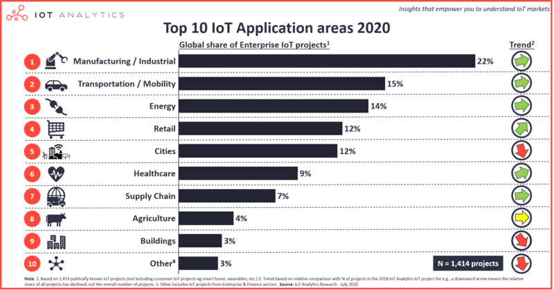

The IoT
The Internet of Things is growing rapidly worldwide and quite possibly more so under the pandemic because of the shift to online shopping it has driven. Industrial infrastructure is enhanced by data and the greater data association with objects. According to IoT Analytics (a market research firm), manufacturing leads in the application of these technology advances. (IoT Analytics, 2020).
 Top 10 IoT application areas
Smart cities are the stimulus for the first discussion in the forum this week. A video clip sets out the possibilities and the pitfalls12.
Activity: what do you think are the biggest concerns raised by the Internet of Things?
For me, there is clearly the potential for the abuse of power. Surveillance by digital means is less visible but no less terrifying than Goebbels’ yellow badge.
References
IoT Analytics. (2020). Top 10 IoT applications in 2020 - Which are the hottest areas right now? https://iot-analytics.com/top-10-iot-applications-in-2020/